What's cool about Erlang?
Image by joguldi
Ok, but what do I do with it?
 Image by Stephen A. Wolfe
Image by Stephen A. Wolfe
Procedural
Object-Oriented
Functional
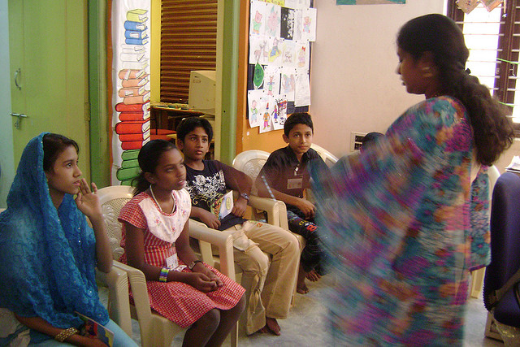 Image from Pratham Books
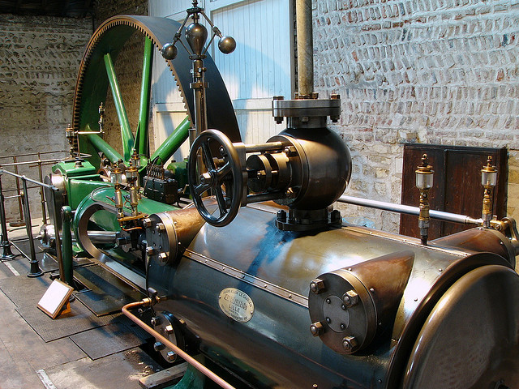 Image from Frdric Bisson
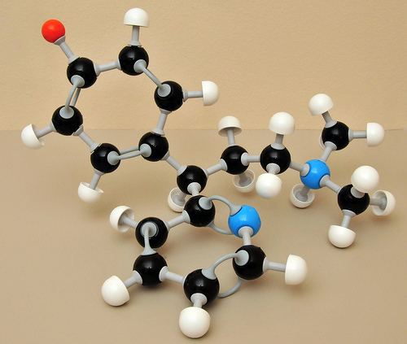 Image from TheIguana
f(x)
- What does that even mean?
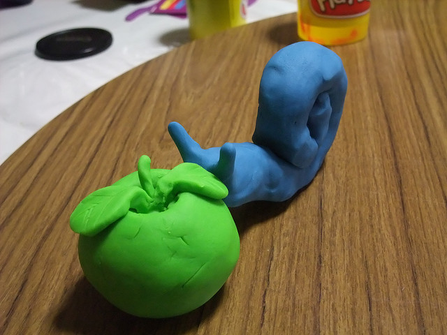 Image from Yun Huang Yong
Why?
- 1 + 2 + 3 + 4 + 5 + ... + n
- n(n+1)/2
Where are my curly braces?!
- % comment
- atom
- 'atom'
- but not "atom"
- Variable
- [1, 2, 3] list
- {1, 2, 3} tuple
- [X, Y, Z] = [1, 2, 3]
- [First, Second | Rest] = [1, 2, 3, 4]
- [First, Second | Rest] = [1, 2]
- [First, Second] = [1, 2, 3, 4]
- [First, Second | _ ] = [1, 2, 3, 4]
- [First, Second | _Rest ] = [1, 2, 3, 4]
my_func(Param1, ... ) ->
%% intermediate stuff
Value. f(X) -> X * 2. Image by Graeme Newcomb
Image by Graeme Newcomb
my_func(Param1) ->
my_func(Param1, "default").
my_func(Param1, Param2) ->
%% actually do stuff... my_func([]) -> ...
my_func([Only]) -> ...
my_func([First, Second | Rest]) -> ... my_func(0) -> ...
my_func(X) where X > 0 -> ...
my_func(X) where X < 0 -> ... if
X >= 100 -> 100;
X >= 0 -> X;
true -> 0
end case my_func(X) of
error -> [];
List -> List
end Output = case file:open(Filename, [read]) of
{ok, Handle} ->
process_file(Handle);
{error, Reason} ->
log_error(Reason, Filename),
[]
end.- Output = process_file(Handle)
- Output = []
#!/usr/bin/escript
main(_Args) ->
io:format("Hello World!~n"). #!/usr/bin/escript
main(Args) -> main("World", Args).
main(_, ["-h" | _Args]) ->
io:format("Help! Help!~n");
main(_, ["-n", Name | Args]) ->
main(Name, Args);
main(Name, []) ->
io:format("Hello, ~s!~n", [Name]).Image by chrisdlugosz
project
action
sub-project
action
action
project
sub-project
sub-project
action
- work on presentation [computer, quiet] (2011-08-24) !!
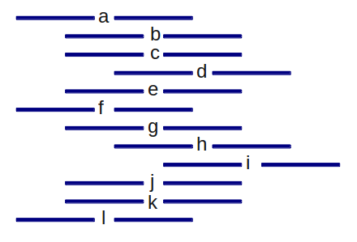

 Image from Wikimedia Commons
Image from Wikimedia Commons
{kind=link}
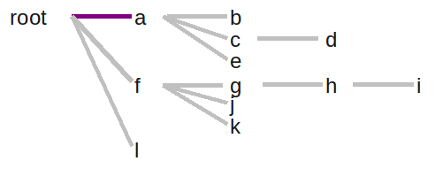
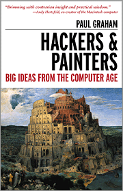 Image from O'Reilly Media
Image from IMLS DCC
String[] process(String[] input) {
String[] output = new String[input.length];
for (int i=0; i < input.length; i++) {
output[i] = do_stuff(input[i]);
}
return output;
} process([First|Rest], Output) ->
NewFirst = do_stuff(First),
process(Rest, [NewFirst|Output]); Output = process(Input, []).
process([First|Rest], Output) ->
NewFirst = do_stuff(First),
process(Rest, [NewFirst|Output]);
process([], Output) ->
lists:reverse(Output). Image by Brian Hillegas
Image by Brian Hillegas
Image by Alex E. Proimos
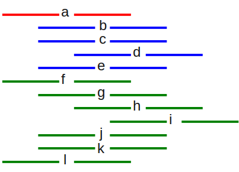
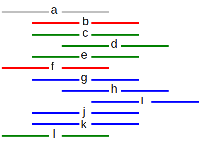
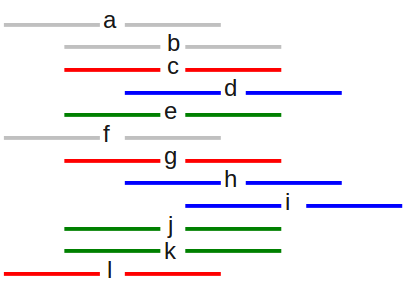
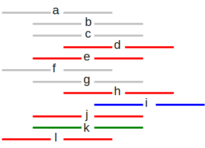
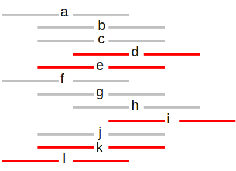
Erlang: A kinder, gentler Lisp?
-record(line, {content, indent}).
-record(node, {content, children}).
build_nodes([First|Rest]) ->
{ChildLines, SiblingLines} =
split_list(First#line.indent, [], Rest),
Children = build_nodes(ChildLines),
Siblings = build_nodes(SiblingLines),
Node = #node{content=First#line.content, children=Children},
[Node|Siblings];
build_nodes([]) -> [].split_list(MinIndent, Children, [First|Rest]) ->
if
First#line.indent > MinIndent ->
split_list(MinIndent, [First|Children], Rest);
true ->
{lists:reverse(Children), [First|Rest]}
end;
split_list(_Indent, Children, []) ->
{lists:reverse(Children), []}.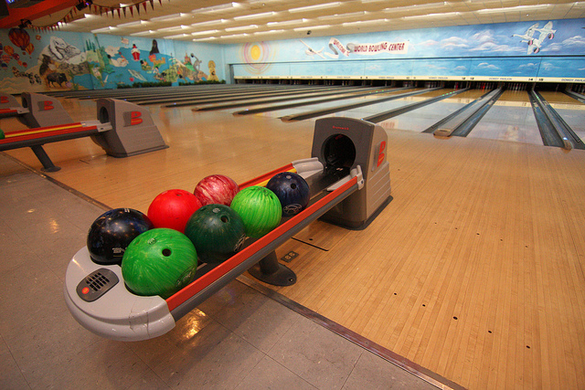 Image by Sam Howzit
Image from Wikipedia
{kind=link}
score(Rolls) -> frame(Rolls, 1, 0).
frame(_BonusRolls, 11, Score) -> Score;
frame([10|Rest], Frame, Score) ->
[Bonus1, Bonus2|_] = Rest,
frame(Rest, Frame + 1, Score + 10 + Bonus1 + Bonus2);
frame([First,Second|Rest], Frame, Score) when (First+Second==10)->
[Bonus1|_] = Rest,
frame(Rest, Frame + 1, Score + 10 + Bonus1);
frame([First,Second|Rest], Frame, Score) ->
frame(Rest, Frame + 1, Score + First + Second).test() ->
test(0, [0,0, 0,0, 0,0, 0,0, 0,0, 0,0, 0,0, 0,0, 0,0, 0,0]),
test(20, [1,1, 1,1, 1,1, 1,1, 1,1, 1,1, 1,1, 1,1, 1,1, 1,1]),
test(150, [5,5, 5,5, 5,5, 5,5, 5,5, 5,5, 5,5, 5,5, 5,5, 5,5, 5]),
test(47, [1,1, 1,1, 1,1, 1,1, 1,1, 1,1, 1,1, 1,1, 1,1, 10, 10 ,9]),
test(173, [7,3, 7,3, 7,3, 7,3, 7,3, 7,3, 7,3, 7,3, 7,3, 7,3, 10]),
test(Expected, Rolls) ->
case score(Rolls) of
Expected -> io:fwrite("Pass~n");
Scored -> io:fwrite("Fail: expected=~p, scored=~p~n",
[Expected, Scored])
end.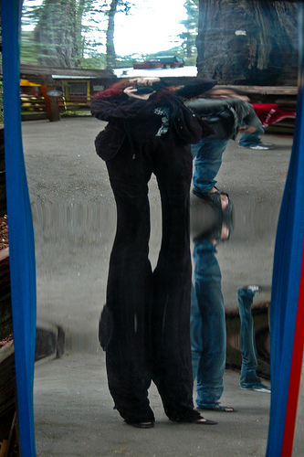 Image by Foxtongue
Image by Cass Chin
Image by orsocurioso
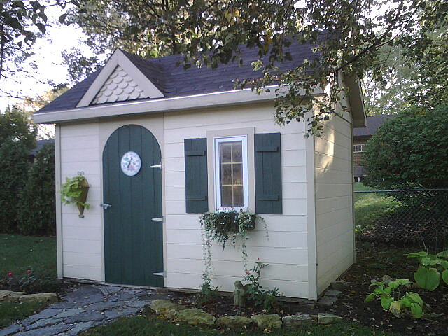 Image by Shedking
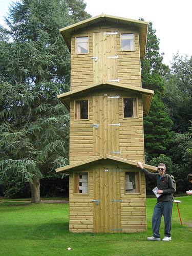 Image by dullhunk
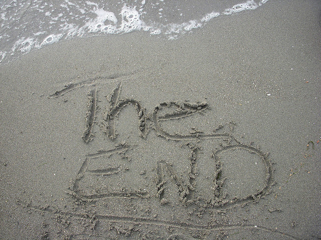 Image by somethingcommon